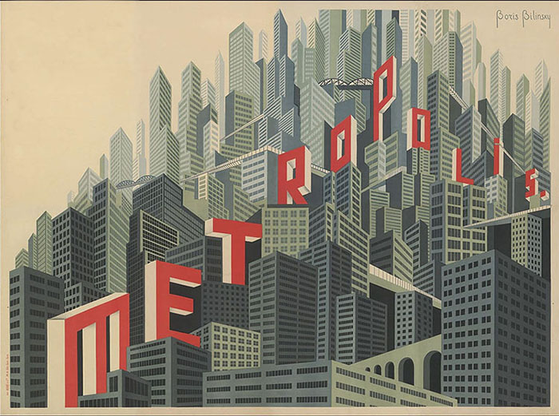
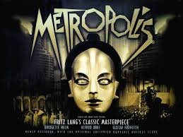
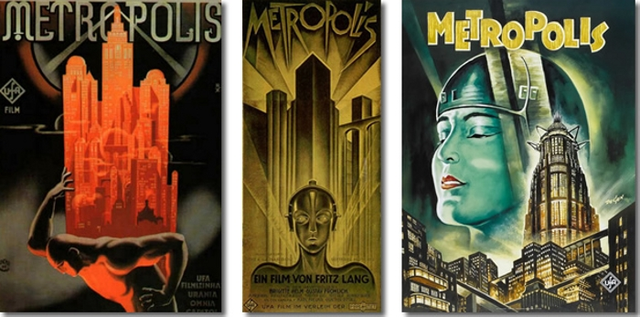

Compositeur
Gottfried Huppertz, un compositeur, chanteur et chef d'orchestre allemand, né le 11 mars 1887 à Cologne et décédé le 7 février 1937 à Berlin d'une crise cardiaque. Il est aujourd'hui surtout connu pour avoir réalisé la musique originale du diptyque Les Nibelungen et celle de Metropolis, de Fritz Lang.
Univers
Affiche du film Metropolis
Le film parle d’une mégapole séparée en deux partie, la partie du haut où vivent les familles intellectuelles dirigeantes et où se trouve le luxe et le divertissement, et la partie basse de la ville où les autres triment pour faire fonctionner la ville.
Synopsis
Affiche du film Metropolis
Dans une immense métropole séparée en deux parties, les travailleurs
s’occupent des machines en basse ville, alors que les autres ne font
que profiter de leurs loisirs. Le fils du maire prévient son père du
danger dans lequel ils se trouvent, si les travailleurs décidaient de
se rebeller. Le maire demande donc à un inventeur, Rotwang,
de onstruire un androïde pour éviter que les travailleurs se rebelle.
Maria, une femme de la ville basse, essaie de promouvoir
l'entente entre les classes, mais Rotwang pense
différemment...
Musique
Affiche du film Metropolis
Écoutez quelques passages de musique du film Metropolis regroupé dans le fichier audio ci-dessous